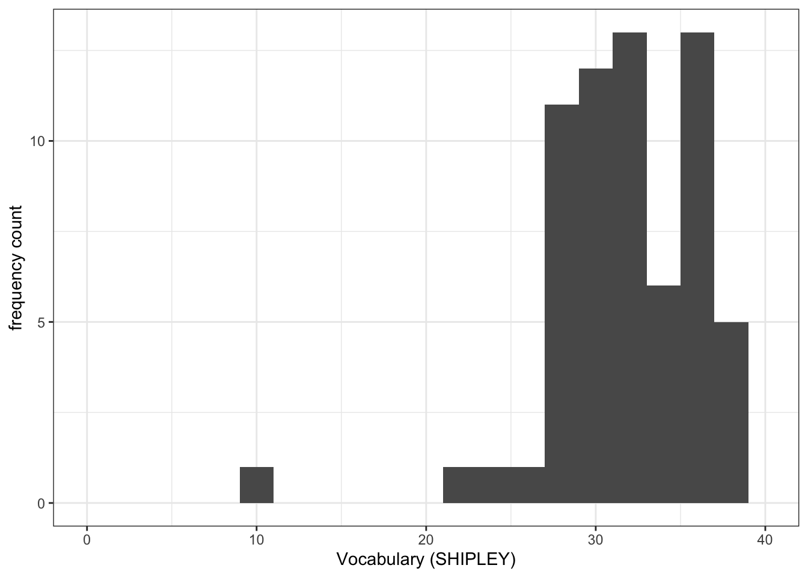
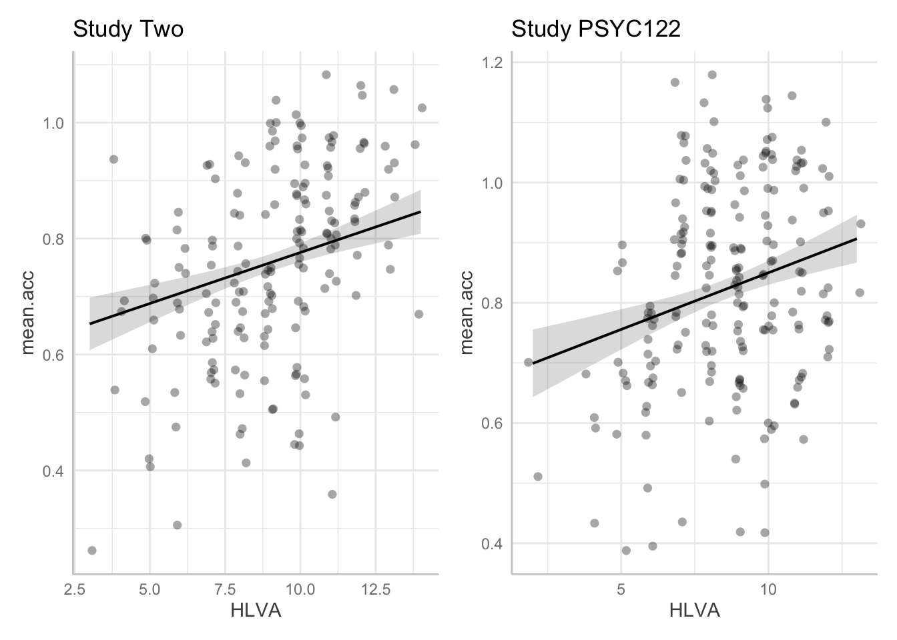
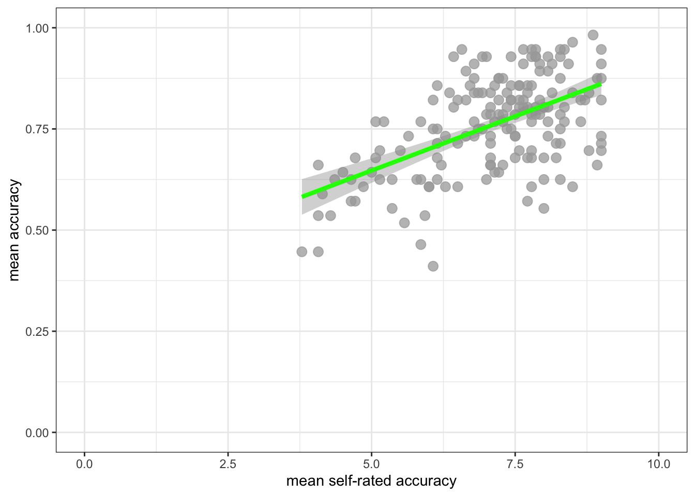

download.file("https://github.com/lu-psy-r/statistics_for_psychologists/blob/main/PSYC122/data/week19/study-one-general-participants.csv?raw=true", destfile = "study-one-general-participants.csv")8. Week 19 – Linear models – critical perspectives
Written by Rob Davies
Warning
This page is now live for you to use: Welcome!
- Here is a link to the sign-in page for R-Studio Server
Week 19: Introduction
Welcome to your overview of our work together in PSYC122 Week 19.
Tip
Putting it all together
- We have completed four classes in weeks 16-19.
- These classes are designed to enable you to revise and put into practice some of the key ideas and skills you have been developing in the first year research methods modules PSYC121, PSYC123 and PSYC124.
- We have been doing this in the context of a live research project with potential real world impacts: the Clearly Understood project.
In the week 19 class, we will aim to answer two research questions:
- What person attributes predict success in understanding?
- Can people accurately evaluate whether they correctly understand written information?
We will be revisiting some of the ideas and techniques you have seen introduced in previous classes. And we will be extending your development with some new ideas, to strengthen your skills.
Tip
I have said that our aim in these classes is to contribute new findings from the data we collect together.
- That time is now.
The PSYC122 health comprehension survey is now closed, and we will focus our practical work in week 19 on analyzing the data we have collected.
Our learning goals
In Week 19, we aim to further develop skills in analyzing and in visualizing psychological data.
We will use linear models to estimate the association between predictors and outcomes in order to answer our research questions.
Tip
What is new here is that we will compare the results from different studies to critically examine questions relating to reproducibility:
- Do we see similar results when similar methods are used to collect data to address the same questions?
We shall be focusing our analysis work on response data contributed by PSYC122 students.
- But we will critically examine whether the results of our analyses of PSYC122 data are or are not similar to the results of the analyses of data collected in other studies.
When we do linear models, as you have seen, we usually need to report:
- information about the model we specify, identifying all predictors;
- our evaluation of whether the effects of one or more predictors are significant;
- model fit statistics (
F, R-squared) as well as coefficient estimates; - and descriptions of the impact of predictors.
Usually, in describing the impacts of predictors, we are required to communicate:
- the direction of the effect – do values of the outcome variable increase or decrease given increasing values of the predictor?
- the size of the effect – how much do values of the outcome variable increase or decrease given increasing values of the predictor?
Tip
In assessing reproducibility, therefore, we may focus here on:
- Whether an effect is or is not significant in the datasets we are comparing;
- Whether the estimate of the coefficient for the slope of an effect of interest has similar sign (positive or negative) or size (the value of the coefficient) in the datasets we are comparing.
Lectures
Tip
Before you go on to the activities in Section 5, watch the lectures:
The lecture for this week is presented in four short parts. You can view video recordings of the lectures using Panopto, by clicking on the video images shown following.
- Anybody who has the link should be able to view the video.
- Overview (17 minutes): Critical perspectives – The real challenge in psychological science (people vary, results vary) – variation, replication and evaluating evidence across multiple studies.
- The Clearly Understood project – questions and analyses (13 minutes): Critical thinking – candidate answers, our assumptions, the sources of uncertainty, and working with samples.
- Evaluating evidence across studies (18 minutes): People vary, results vary – evaluating, thinking about, critically reflecting on analysis results
- Becoming a power learner (24 minutes): Reproducibility, sharing, and learning to exploit the R knowledge ecosystem – every question you ever have has an answer somewhere online; find out how to locate and use this knowledge for yourself.
Tip
The slides presented in the videos can be downloaded either as a web page or as a Word document.
- The slides exactly as presented (21 MB).
- The slides converted to a Word .docx (11 MB).
You can download the web page .html file and click on it to open it in any browser (e.g., Chrome, Edge or Safari). The slide images are high quality and there are a lot of them, so the file is quite big; it may take a few seconds to download.
You can download the .docx file and click on it to open it as a Word document that you can then edit. Converting the slides to a .docx distorts some images but the benefit of the conversion is that it makes it easier for you to add your notes.
Tip
To work with our lecture recordings:
- Watch the video parts right through.
- Use the printable versions of the slides to make notes.
- Try out the coding exercises in the how-to guide and the activity tasks or questions (Section 5) to learn how to construct visualizations and do analyses.
The lectures have four main areas of focus
1. The real challenges in psychological science
We step back to get a broader perspective on what we are doing when we are doing psychological science. We look at some of the real challenges that professional psychologists work with, as we attempt to build a scientific understanding of what people think and do, and why they do it.
Tip
What makes psychological science challenging:
- People vary
- Results vary
2. Critical thinking
The power and flexibility of the linear model presents challenges. We must decide which candidate predictor variables we specify in our model. This means we must think critically.
Tip
We can develop our critical thinking skills by considering:
- Our assumptions about:
- validity;
- measurement;
- generalizability.
- Sources of uncertainty about:
- predicted change in outcomes, given our predictors;
- ways that expected changes vary between people or groups;
- random ways that specific responses can be produced.
3. Evaluating evidence across multiple studies
All important questions in the psychological scientific literature are addressed in multiple studies: how do we evaluate the evidence, comparing the results from different studies?
Tip
How do we build knowledge in psychological science?
We consider:
- replication
- reproducibility
And how to assess results across multiple studies.
These are complex concerns and you will learn more about them, in other modules, this year and next year, when you develop an understanding of systematic reviews, meta-analysis, and the critical evaluation of scientific evidence.
4. How to become a power user
You have been learning about data analysis using R. We have been providing rich learning materials but in Week 19 we start to explore the wider world of knowledge about data analysis and R.
Tip
R is free and open. This means that:
- there is a vast knowledge ecosystem you can use for your own purposes;
- learning to be a powerful data analyst involves learning how to locate and to use the resources that are out there.
We hope that these lessons are just the start for many of you.
Every problem you ever have:
- someone has had it before;
- solved it;
- and written a blog or social media post or recorded a YouTube or TikTok about it.
Reading: Links to other classes
We do not provide further reading for this class but you will find it helpful to revise some of the key ideas you have been learning about PSYC122 and in other modules.
- The lectures in PSYC123 on: the scientific method; reliability and validity; experimental design, especially between-subjects studies; hypothesis testing; and precise hypotheses.
- The lecture in PSYC122 on linear models.
Pre-lab activities
Pre-lab activity 1
The survey is now closed.
If you want more information about the project, we invite you to read the pre-registered research plan for the PSYC122 health advice research project.
Lab activities
Introduction
We will do our practical lab work to develop your skills in the context of the Clearly Understood project.
- Our focus is on what makes it easy or difficult for people to understand written health information.
Important
In Week 19, we aim to answer the research questions:
- What person attributes predict success in understanding health information?
- Can people accurately evaluate whether they correctly understand written health information?
PSYC122 students contributed their responses to a survey we have been using to collect data to find answers to these questions.
In our practical work, we will be examining the PSYC122 data but, as we do so, we should understand that no one study in psychological science will give us definitive answers to any interesting question about people and what they do.
In the practical work, you will be asked to reflect on how data from different studies – using the same methods, with the same aims – may nevertheless vary:
- vary in the data distributions;
- and vary in the results that analyses indicate.
Critically evaluating results across a series of studies, or replication attempts, is part of the process of accumulating evidence to build insight in psychological science, given measurement under uncertainty and limits in samples.
Get ready
Download the data
Click on the link: 122-week19_for_students.zip to download the data files folder. Then upload the contents to the new folder you created in RStudio Server.
The downloadable .zip folder includes the data files:
study-one-general-participants.csvstudy-two-general-participants.csv2023-24_PSYC122-participants.csv
and the R Markdown .Rmd:
2023-24-PSYC122-w19-how-to.Rmd
If you can’t upload these files to the server – this affects some students – you can use some code to get R to do it for you: uncover the code box below to reveal the code to do this.
Code
- You can use the code below to directly download the file you need in this lab activity to the server.
- Remember that you can copy the code to your clipboard by clicking on the ‘clipboard’ in the top right corner.
- Get the
study-one-general-participants.csvdata
- Get the
study-two-general-participants.csvdata
download.file("https://github.com/lu-psy-r/statistics_for_psychologists/blob/main/PSYC122/data/week19/study-two-general-participants.csv?raw=true", destfile = "study-two-general-participants.csv")- Get the 2023-24 PSYC122
2023-24_PSYC122-participants.csvdata
download.file("https://github.com/lu-psy-r/statistics_for_psychologists/blob/main/PSYC122/data/week19/2023-24_PSYC122-participants.csv?raw=true", destfile = "2023-24_PSYC122-participants.csv")- Get the
2023-24-PSYC122-w19-how-to.Rmdhow-to guide
download.file("https://github.com/lu-psy-r/statistics_for_psychologists/blob/main/PSYC122/data/week19/2023-24-PSYC122-w19-how-to.Rmd?raw=true", destfile = "2023-24-PSYC122-w19-how-to.Rmd")Check: What is in the data files?
Each of the data files we will work with has a similar structure, as you can see in this extract.
| participant_ID | mean.acc | mean.self | study | AGE | SHIPLEY | HLVA | FACTOR3 | QRITOTAL | GENDER | EDUCATION | ETHNICITY |
|---|---|---|---|---|---|---|---|---|---|---|---|
| studytwo.1 | 0.4107143 | 6.071429 | studytwo | 26 | 27 | 6 | 50 | 9 | Female | Higher | Asian |
| studytwo.10 | 0.6071429 | 8.500000 | studytwo | 38 | 24 | 9 | 58 | 15 | Female | Secondary | White |
| studytwo.100 | 0.8750000 | 8.928571 | studytwo | 66 | 40 | 13 | 60 | 20 | Female | Higher | White |
| studytwo.101 | 0.9642857 | 8.500000 | studytwo | 21 | 31 | 11 | 59 | 14 | Female | Higher | White |
You can use the scroll bar at the bottom of the data window to view different columns.
You can see the columns:
participant_IDparticipant code;mean.accaverage accuracy of response to questions testing understanding of health guidance (varies between 0-1);mean.selfaverage self-rated accuracy of understanding of health guidance (varies between 1-9);studyvariable coding for what study the data were collected inAGEage in years;HLVAhealth literacy test score (varies between 1-16);SHIPLEYvocabulary knowledge test score (varies between 0-40);FACTOR3reading strategy survey score (varies between 0-80);GENDERgender code;EDUCATIONeducation level code;ETHNICITYethnicity (Office National Statistics categories) code.
Tip
It is always a good idea to view the dataset – click on the name of the dataset in the R-Studio Environment window, and check out the columns, scroll through the rows – to get a sense of what you are working with.
Lab activity 1: Work with the How-to guide
The how-to guide comprises an .Rmd file:
2023-24-PSYC122-w19-how-to.Rmd
It is full of advice and example code.
The code in the how-to guide was written to work with two data files:
study-one-general-participants.csvstudy-two-general-participants.csv
We will be working with your (PSYC122) response data in Section 5.4.
Tip
We show you how to do everything you need to do in the lab activity (Section 5.4, shown following) in the how-to guide.
- Start by looking at the
how-toguide to understand what steps you need to follow in the lab activity.
We will take things step-by-step.
We split .Rmd scripts by steps, tasks and questions:
- different steps for different phases of the analysis workflow;
- different tasks for different things you need to do;
- different questions to examine different ideas or coding challenges
Tip
- Make sure you start at the top of the
.Rmdfile and work your way, in order, through each task. - Complete each task before you move on to the next task.
In the activity Section 5.4, we are going to work through a sequence of steps and tasks that mirrors the sequence you find in the how-to guide.
- There is a little bit of variation, comparing the later steps in the
how-toguide and the steps in Section 5.4, but that variation is designed to help you with your learning.
Tip
- Notice that we are gradually building up our skills: consolidating what we know; revising important learning; and extending ourselves to acquire new skills.
Step 1: Set-up
- Empty the R environment – using
rm(list=ls()) - Load relevant libraries – using
library()
Step 2: Load the data
- Read in the data files – using
read_csv() - Inspect both datasets – using
head()andsummary()
Step 3: Compare the data from the different studies
- Compare the data distributions from the two studies – using
geom_histogram()6-7. and by constructing grids of plots
Step 4: Use scatterplots and correlation to examine associations between variables
- Draw scatterplots to compare the potential association between variables
- Create grids of plots to make side-by-side comparisons of associations in different datasets
- Estimate the associations between pairs of variables and compare the estimates
Step 5: Use a linear model to to answer the research questions – models with multiple predictors
- Examine the relation between one outcome and multiple predictors
- Do this in comparable datasets, and compare summaries or plots
Tip
If you are unsure about what you need to do, look at the advice in 2023-24-PSYC122-w19-how-to.Rmd on how to do the tasks, with examples on how to write the code.
You will see that you can match a task in the activity Section 5.4 to the same task in the how-to guide. The how-to shows you what function you need and how you should write the function code.
This process of adapting demonstration code is a process critical to data literacy and to effective problem solving in modern psychological science.
Warning
Don’t forget: You will need to change the names of the dataset or the variables to complete the tasks in Section 5.4.
Lab activity 2
OK: now let’s do it!
In the following, we will guide you through the tasks and questions step by step.
Tip
- We will not at first give you the answers to questions about the data or about the results of analyses.
- An answers version of the workbook will be provided after the last lab session (check the answers then in Section 6) so that you can check whether your independent work has been correct.
Questions
Warning
Students have told us that it would be helpful to your learning if we reduce the information in the hints we provide you. We have done this in Week 19.
The motivation for doing this is:
- It will require you to do more active thinking to complete tasks or answer questions;
- Thus, you can check to see how your learning is developing – can you do the tasks, given what you know now?
- Plus, psychological research shows that active thinking is better for understanding and for learning.
Where we do give you hints, we will sometimes replace the correct bit of code with a place-holder: ...
- Your task will therefore be to replace the place-holder
...with the correct bit of code or the correct dataset or variable name.
Step 1: Set-up
To begin, we set up our environment in R.
Task 1 – Run code to empty the R environment
Task 2 – Run code to load relevant libraries
Notice that in Week 19, we need to work with the libraries ggeffects, patchwork and tidyverse. Use the library() function to make these libraries available to you.
Step 2: Load the data
Task 3 – Read in the data files we will be using
The data files are called:
study-two-general-participants.csv2023-24_PSYC122-participants.csv
Use the read_csv() function to read the data files into R:
When you read the data files in, give the data objects you create distinct name e.g. study.two.gen versus study.122.
Task 4 – Inspect the data file
Use the summary() or head() functions to take a look at both datasets.
Step 3: Compare the data from the different studies
Revise: practice to strengthen skills
Task 5 – Compare the data distributions from the two studies
Questions: Task 5
Q.1. What is the mean of the
mean.accandSHIPLEYvariables in the two studies?
Q.2. Draw histograms of both mean.acc and mean.self for both studies.
Introduce: make some new moves
Task 6 – Create grids of plots to make the comparison easier to do
Hint: Task 6 – What we are going to do is to create two histograms of
mean.acc(one plot for each study dataset) and then present the plots side by side to allow easy comparison of variable distributions
We need to make two changes to the coding approach you have been using until now.
- Remember, you can find what you need to do in
2023-24-PSYC122-w19-how-to.Rmd.
First, create plot objects, assign the plot objects distinct names.
Second, name the plots to show them side-by-side.
Hint
This is what you need to: check out the process, step-by-step.
- Notice that you repeat the process for each of two (or more) plots.
ggplot(...)tell R you want to make a plot using theggplot()function;plot.one <-tell R you want to give the plot a name; the name appears in the environment;ggplot(data = study.two.gen ...)tell R you want to make a plot with thestudy.twodata;ggplot(..., aes(x = mean.acc))tell R that you want to make a plot with the variablemean.acc;
- here, specify the aesthetic mapping,
x = mean.acc
geom_histogram()tell R you want to plot values ofmean.accas a histogram;binwidth = .1adjust the binwidth to show enough detail but not too much in the distribution;theme_bw()tell R what theme you want, adjusting the plot appearance;labs(x = "Mean accuracy (mean.acc)", y = "frequency count", title = "Study Two")fix the x-axis and y-axis labels;
- here, add a title for the plot, so you can tell the two plots apart;
xlim(0, 1)adjust the x-axis limits to show the full range of possible score values on this variable.
Do this process twice, once for each dataset, creating two plots so that you can compare the distribution of mean.acc scores between the studies.
Finally, having created the two plots, produce them for viewing:
plot.two + plot.122having constructed – and named – both plots, you enter their names, separated by a +, to show them in a grid of two plots.
Notice: until you get to step 10, nothing will appear. This will be surprising but it is perfectly normal when we increase the level of complexity of the plots we build.
Task 7 – Try this out for yourself, focusing now on the distribution of SHIPLEY scores in the two studies
First, create plot objects but do not show them.
- Give each plot a name. You will use the names next.
Second produce the plots for viewing, side-by-side, by naming them: plot.1.name + plot.2.name.
Q.3. Now use the plots to do some data analysis work: how do the
SHIPLEYdistributions compare, when you compare theSHIPLEYofstudy.two.genversusSHIPLEYofstudy.122?
Q.4. Is the visual impression you get from comparing the distributions consistent with the statistics you see in the summary?
Step 4: Now use scatterplots and correlation to examine associations between variables
Revise: practice to strengthen skills
Task 8 – Draw scatterplots to compare the potential association between mean.acc and mean.self in both study.two.gen and study.122 datasets
Hint: Task 8 – The plotting steps are explained in some detail in
2023-24-PSYC122-w17-how-to.Rmdand you can see example code in2023-24-PSYC122-w19-how-to.Rmd
Task 9 – Create a grid of plots to make the comparison easier to do
Hint: Task 9 – We follow the same steps as we used in tasks 6 and 7 to create the plots
We again:
- First construct the plot objects and give them names;
- create and show a grid of named plots.
Though this time we are producing a grid of scatterplots.
First, create plot objects, give them names, but do not show them.
Second name the plots to show them side-by-side in the plot window.
Now use the plots to make comparison judgments.
Q.5. How does the association, shown in the plots, between
mean.selfandmean.acccompare when you look at thestudy.two.genversus thestudy.122plot? hint: Q.5. When comparing evidence about associations in different studies, we are mostly going to focus on the slope – the angle – of the prediction lines, and the ways in which points do or do not cluster about the prediction lines.
We are now in a position to answer one of our research questions:
- Can people accurately evaluate whether they correctly understand written health information?
Revise: practice to strengthen skills
Task 10 – Can you estimate the association between mean.acc and mean.self in both datasets?
Hint: Task 10 – We use
cor.test()as you have been shown how to do e.g. in2023-24-PSYC122-w16-how-to.Rmd
Do the correlation for both datasets.
First calculate the correlation between mean.acc and mean.self in study.two.
Then answer the following questions.
Q.6. What is r, the correlation coefficient?
Q.7. Is the correlation significant?
Q.8. What are the values for t and p for the significance test for the correlation?
Second, look at the correlation between mean.acc and mean.self in study.122.
Then answer the following questions.
Q.9. What is r, the correlation coefficient?
Q.10. Is the correlation significant?
Q.11. What are the values for t and p for the significance test for the correlation?
Now we can answer the research question:
- Can people accurately evaluate whether they correctly understand written health information?
Q.12. What do the correlation estimates tell you is the answer to the research question?
Q.13. Can you compare the estimates, given the two datasets, to evaluate if the result in
study.two.genis replicated instudy.122? hint: Q.13. We can judge if the result in a study is replicated in another study by examining if – here – the correlation coefficient is significant in both studies and if the coefficient has the same size and sign in both studies.
Task 11 – In working with R to do data analysis, we often work with libraries of function like {tidyverse} that enable us to do things (see the week 19 lecture for discussion).
In this way, we are using the {patchwork} library so that we can create plots and then present them in a grid.
Can you find the online information about {patchwork} and use it to adjust the layout of the grids of plots you are using?
Hint: Task 11 – To find out more information about a function or a library in R, do a search for the keywords
You can do a search, using any search engine (e.g., Bing, Chrome, Google), by entering:
in r ...
And pasting the words you want to know about to replace the ... e.g. “in r patchwork”.
You will then see a list of results including the link to the {patchwork} information:
Step 5: Use a linear model to to answer the research questions – multiple predictors
Revise: practice to strengthen skills
Task 12 – Examine the relation between outcome mean accuracy (mean.acc) and multiple predictors
Hint: Task 12 – We use
lm(), as we have been doing before, see e.g.2023-24-PSYC122-w18-how-to.R
Examine the predictors of mean accuracy (
mean.acc), first, for thestudy.two.gendata.
We specify a linear model of the study.two.gen data, including as the outcome:
- mean accuracy (
mean.acc)
and including as the predictors the variables:
- health literacy (
HLVA); - vocabulary (
SHIPLEY); - reading strategy (
FACTOR3).
Using the model estimates, we can answer the research question:
- What person attributes predict success in understanding?
Inspect the model summary to then answer the following questions:
Q.14. What is the estimate for the coefficient of the effect of the predictor
SHIPLEYin this model?
Q.15. Is the effect significant?
Q.16. What are the values for t and p for the significance test for the coefficient?
Q.17. Now consider the estimates for all the variables, what do you conclude is the answer to the research question – given the
study.two.gendata:
- What person attributes predict success in understanding?
hint: Q.17. Can you report the model and the model fit statistics using the language you have been shown in the week 18 lecture?
Task 13 – Examine the predictors of mean accuracy (mean.acc), now, for the study.122 data
Examine the predictors of mean accuracy (
mean.acc), second, for thestudy.122data.
We specify a linear model of the study.122 data, including as the outcome:
- mean accuracy (
mean.acc)
and including as the predictors the variables:
- health literacy (
HLVA); - vocabulary (
SHIPLEY); - reading strategy (
FACTOR3).
Using the model estimates, we can answer the research question:
- What person attributes predict success in understanding?
Inspect the model summary, then answer the following questions:
Q.18. What is the estimate for the coefficient of the effect of the predictor,
HLVA, in this model?
Q.19. Is the effect significant?
Q.20. What are the values for t and p for the significance test for the coefficient?
Q.21. Now consider the estimates for all the variables, what do you conclude is the answer to the research question – given the
study.122data:
- What person attributes predict success in understanding?
hint: Q.21. Can you report the model and the model fit statistics using the language you have been shown in the week 18 lecture?
At this point, we can evaluate the evidence from the PSYC122 sample – based on your responses – to assess if the patterns, the estimates, we saw previously are repeated in analyses of PSYC122 responses.
Q.22. Are the findings from
study.two.genreplicated instudy.122?
hint: Q.22. We can judge if the results in an earlier study are replicated in another study by examining if – here – the linear model estimates are significant in both studies and if the coefficient estimates have the same size and sign in both studies.
Q.23. How would you describe the outstanding difference between the results of the two studies?
hint: Q.23. We can look at the estimates but we can also use model prediction plotting code to visualize the results. You can build on the code you used before, see:
2022-23-PSYC122-w18-how-to.R2022-23-PSYC122-w19-how-to.R
hint: Q.23. Let’s focus on comparing the
study.two.genandstudy.122estimates for the effect ofHLVAin both models: we can plot model predictions, for comparison:
First: fit the models – using different names for the different models.
Second, create prediction plots for the HLVA effect for each model.
Third, show the plots side-by-side:
Then use your visualization of the model results to describe the outstanding difference between the results of the two studies – focusing on the effect of HLVA in both models.
Tip
- We can redraw the prediction plots – next – to add in more information about our samples. This change, see following, will help us to interpret the results of the analyses we have done.
- And that will help you to see why data visualization and data analysis work well together.
Task 14 – In producing prediction plots, we are using functions from the {ggefects} library. Can you locate online information about working with the library functions?
Hint
Try doing a search with the key words: in r ggeffects.
If you do that, you will see links to the website:
Task 15 – In the {ggeffects} online information, you can see links to practical examples. Can you use the information under Practical examples to adjust the appearance of the prediction plots: to make them black and white; to add points?
First create the plots.
Then show the plots in a grid, to allow comparison of the effect of HLVA between studies in a professional presentation.
It is often useful to compare model estimates – here, the slopes – with the raw data observations.
- No model will be perfect.
- Visualizing the difference between what we observe and what we predict helps to make sense of how our prediction model could be improved.
Q.24. Given the information in the adjusted plots, can you explain why we appear to be more uncertain about the
HLVAeffect given thestudy.122data?
You have now completed the Week 19 questions.
You have now extended your capacity to think critically about our data and our capacity to predict people and their behaviour.
Tip
- We have used PSYC122 students’ responses to examine the robustness of evidence for potential answers to our research questions.
- Examining evidence across multiple different studies is a key element part of the process of building insights in psychological science.
Answers
When you have completed all of the lab content, you may want to check your answers with our completed version of the script for this week.
Tip
The .Rmd script containing all code and all answers for each task and each question will be made available after the final lab session has taken place.
You can download the script by clicking on the link: 2023-24-PSYC122-w19-workbook-answers.Rmd.
Or by copying the code into the R
Consolewindow and running it to get the2023-24-PSYC122-w19-workbook-answers.Rmdloaded directly into R:
download.file("https://github.com/lu-psy-r/statistics_for_psychologists/blob/main/PSYC122/data/week19/2023-24-PSYC122-w19-workbook-answers.Rmd?raw=true", destfile = "2023-24-PSYC122-w19-workbook-answers.Rmd")We set out answers information the Week 19 Critical perspectives questions, below.
- We focus on the Lab activity 2 questions where we ask you to interpret something or say something.
- We do not show questions where we have given example or target code in the foregoing lab activity Section 5.4.
You can see all the code and all the answers in 2023-24-PSYC122-w19-workbook-answers.Rmd.
Answers
Tip
Click on a box to reveal the answer.
Questions
Q.1. What is the mean of the
mean.accandSHIPLEYvariables in the two studies?
Q.2. Draw histograms of both mean.acc and mean.self for both studies.
Note
- A.2. You can write the code using the same code structure you have been shown e.g. in
2023-24-PSYC122-w19-how-to.Rmdbut changing dataset and variable names to get the right plots:
ggplot(data = study.two.gen, aes(x = mean.acc)) +
geom_histogram(binwidth = .1) +
theme_bw() +
labs(x = "Mean accuracy (mean.acc)", y = "frequency count") +
xlim(0, 1)Warning: Removed 2 rows containing missing values (`geom_bar()`).
ggplot(data = study.two.gen, aes(x = SHIPLEY)) +
geom_histogram(binwidth = 2) +
theme_bw() +
labs(x = "Vocabulary (SHIPLEY)", y = "frequency count") +
xlim(0, 40)Warning: Removed 2 rows containing missing values (`geom_bar()`).
ggplot(data = study.122, aes(x = mean.acc)) +
geom_histogram(binwidth = .1) +
theme_bw() +
labs(x = "Mean accuracy (mean.acc)", y = "frequency count") +
xlim(0, 1)Warning: Removed 2 rows containing missing values (`geom_bar()`).
ggplot(data = study.122, aes(x = SHIPLEY)) +
geom_histogram(binwidth = 2) +
theme_bw() +
labs(x = "Vocabulary (SHIPLEY)", y = "frequency count") +
xlim(0, 40)Warning: Removed 2 rows containing missing values (`geom_bar()`).
Create histograms to enable you to compare the distribution of SHIPLEY scores in the study.two.gen and the study.122 studies
- First, create plot objects but do not show them.
- Second produce the plots for viewing, side-by-side, by naming them:
plot.1.name + plot.2.name.
Q.3. Now use the plots to do some data analysis work: how do the
SHIPLEYdistributions compare, when you compare theSHIPLEYofstudy.two.genversusSHIPLEYofstudy.122?
Q.4. Is the visual impression you get from comparing the distributions consistent with the statistics you see in the summary?
Draw scatterplots to compare the potential association between mean.acc and mean.self in both the study.two.gen and the study.122 datasets.
We again:
- First construct the plot objects and give them names;
- create and show a grid of named plots.
Though this time we are producing a grid of scatterplots.
Now use the plots to make comparison judgments.
Q.5. How does the association, shown in the plots, between
mean.selfandmean.acccompare when you look at thestudy.two.genversus thestudy.122plot? hint: Q.5. When comparing evidence about associations in different studies, we are mostly going to focus on the slope – the angle – of the prediction lines, and the ways in which points do or do not cluster about the prediction lines.
Can you estimate the association between mean.acc and mean.self in both datasets?
- We use
cor.test()as you have been shown how to do e.g. in2023-24-PSYC122-w16-how-to.Rmd. - Do the correlation for both datasets.
First calculate the correlation between mean.acc and mean.self in study.two. Then answer the following questions.
Q.6. What is r, the correlation coefficient?
Q.7. Is the correlation significant?
Q.8. What are the values for t and p for the significance test for the correlation?
Second, use the same method to calculate the correlation between mean.acc and mean.self in study.122. Then answer the following questions.
Q.9. What is r, the correlation coefficient?
Q.10. Is the correlation significant?
Q.11. What are the values for t and p for the significance test for the correlation?
Now we can answer the research question:
- Can people accurately evaluate whether they correctly understand written health information?
Q.12. What do the correlation estimates tell you is the answer to the research question?
Q.13. Can you compare the estimates, given the two datasets, to evaluate if the result in
study.two.genis replicated instudy.122? hint: Q.13. We can judge if the result in a study is replicated in another study by examining if – here – the correlation coefficient is significant in both studies and if the coefficient has the same size and sign in both studies.
Examine the relation between outcome mean accuracy (mean.acc) and multiple predictors.
We use lm(), as we have been doing before, see e.g. 2023-24-PSYC122-w18-how-to.R
Examine the predictors of mean accuracy (mean.acc), first, for the study.two.gen data.
We specify a linear model of the study.two.gen data, including as the outcome:
- mean accuracy (
mean.acc)
and including as the predictors the variables:
- health literacy (
HLVA); - vocabulary (
SHIPLEY); - reading strategy (
FACTOR3).
Code
model <- lm(mean.acc ~ HLVA + SHIPLEY + FACTOR3, data = study.two.gen)
summary(model)
Call:
lm(formula = mean.acc ~ HLVA + SHIPLEY + FACTOR3, data = study.two.gen)
Residuals:
Min 1Q Median 3Q Max
-0.242746 -0.074188 0.003173 0.075361 0.211357
Coefficients:
Estimate Std. Error t value Pr(>|t|)
(Intercept) 0.146896 0.076325 1.925 0.05597 .
HLVA 0.017598 0.003589 4.904 2.2e-06 ***
SHIPLEY 0.008397 0.001853 4.533 1.1e-05 ***
FACTOR3 0.003087 0.001154 2.675 0.00822 **
---
Signif. codes: 0 '***' 0.001 '**' 0.01 '*' 0.05 '.' 0.1 ' ' 1
Residual standard error: 0.097 on 168 degrees of freedom
Multiple R-squared: 0.3636, Adjusted R-squared: 0.3522
F-statistic: 31.99 on 3 and 168 DF, p-value: < 2.2e-16Using the model estimates, we can answer the research question:
- What person attributes predict success in understanding?
Inspect the model summary to then answer the following questions:
Q.14. What is the estimate for the coefficient of the effect of the predictor
SHIPLEYin this model?
Q.15. Is the effect significant?
Q.16. What are the values for t and p for the significance test for the coefficient?
Q.17. Now consider the estimates for all the variables, what do you conclude is the answer to the research question – given the
study.two.gendata:
- What person attributes predict success in understanding?
hint: Q.17. Can you report the model and the model fit statistics using the language you have been shown in the week 18 lecture?
Examine the predictors of mean accuracy (mean.acc), now, for the study.122 data.
We specify a linear model now of the study.122 data, including as the outcome:
- mean accuracy (
mean.acc)
and including as the predictors the variables:
- health literacy (
HLVA); - vocabulary (
SHIPLEY); - reading strategy (
FACTOR3).
Code
model <- lm(mean.acc ~ HLVA + SHIPLEY + FACTOR3, data = study.122)
summary(model)
Call:
lm(formula = mean.acc ~ HLVA + SHIPLEY + FACTOR3, data = study.122)
Residuals:
Min 1Q Median 3Q Max
-0.37214 -0.07143 -0.01102 0.07411 0.25329
Coefficients:
Estimate Std. Error t value Pr(>|t|)
(Intercept) 0.3066150 0.1447265 2.119 0.0382 *
HLVA 0.0335342 0.0071332 4.701 1.52e-05 ***
SHIPLEY 0.0062524 0.0034741 1.800 0.0768 .
FACTOR3 0.0006217 0.0024450 0.254 0.8001
---
Signif. codes: 0 '***' 0.001 '**' 0.01 '*' 0.05 '.' 0.1 ' ' 1
Residual standard error: 0.1162 on 61 degrees of freedom
Multiple R-squared: 0.4158, Adjusted R-squared: 0.3871
F-statistic: 14.47 on 3 and 61 DF, p-value: 3.156e-07Using the model estimates, we can answer the research question:
- What person attributes predict success in understanding?
Inspect the model summary, then answer the following questions:
Q.18. What is the estimate for the coefficient of the effect of the predictor,
HLVA, in this model?
Q.19. Is the effect significant?
Q.20. What are the values for t and p for the significance test for the coefficient?
Q.21. Now consider the estimates for all the variables, what do you conclude is the answer to the research question – given the
study.122data:
- What person attributes predict success in understanding?
hint: Q.21. Can you report the model and the model fit statistics using the language you have been shown in the week 18 lecture?
At this point, we can evaluate the evidence from the PSYC122 sample – based on your responses – to assess if the patterns, the estimates, we saw previously are repeated in analyses of PSYC122 responses.
Q.22. Are the findings from
study.two.genreplicated instudy.122? - hint: Q.22. We can judge if the results in an earlier study are replicated in another study by examining if – here – the linear model estimates are significant in both studies and if the coefficient estimates have the same size and sign in both studies.
Q.23. How would you describe the outstanding difference between the results of the two studies? hint: Q.23. We can look at the estimates but we can also use model prediction plotting code to visualize the results. You can build on the code you used before, see:
2022-23-PSYC122-w18-how-to.R2022-23-PSYC122-w19-how-to.R
hint: Q.23. Let’s focus on comparing the
study.two.genandstudy.122estimates for the effect ofHLVAin both models: we can plot model predictions, for comparison:
First: fit the models – using different names for the different models.
Code
model.two <- lm(mean.acc ~ HLVA + SHIPLEY + FACTOR3, data = study.two.gen)
summary(model.two)
Call:
lm(formula = mean.acc ~ HLVA + SHIPLEY + FACTOR3, data = study.two.gen)
Residuals:
Min 1Q Median 3Q Max
-0.242746 -0.074188 0.003173 0.075361 0.211357
Coefficients:
Estimate Std. Error t value Pr(>|t|)
(Intercept) 0.146896 0.076325 1.925 0.05597 .
HLVA 0.017598 0.003589 4.904 2.2e-06 ***
SHIPLEY 0.008397 0.001853 4.533 1.1e-05 ***
FACTOR3 0.003087 0.001154 2.675 0.00822 **
---
Signif. codes: 0 '***' 0.001 '**' 0.01 '*' 0.05 '.' 0.1 ' ' 1
Residual standard error: 0.097 on 168 degrees of freedom
Multiple R-squared: 0.3636, Adjusted R-squared: 0.3522
F-statistic: 31.99 on 3 and 168 DF, p-value: < 2.2e-16model.122 <- lm(mean.acc ~ HLVA + SHIPLEY + FACTOR3, data = study.122)
summary(model.122)
Call:
lm(formula = mean.acc ~ HLVA + SHIPLEY + FACTOR3, data = study.122)
Residuals:
Min 1Q Median 3Q Max
-0.37214 -0.07143 -0.01102 0.07411 0.25329
Coefficients:
Estimate Std. Error t value Pr(>|t|)
(Intercept) 0.3066150 0.1447265 2.119 0.0382 *
HLVA 0.0335342 0.0071332 4.701 1.52e-05 ***
SHIPLEY 0.0062524 0.0034741 1.800 0.0768 .
FACTOR3 0.0006217 0.0024450 0.254 0.8001
---
Signif. codes: 0 '***' 0.001 '**' 0.01 '*' 0.05 '.' 0.1 ' ' 1
Residual standard error: 0.1162 on 61 degrees of freedom
Multiple R-squared: 0.4158, Adjusted R-squared: 0.3871
F-statistic: 14.47 on 3 and 61 DF, p-value: 3.156e-07Second, create prediction plots for the HLVA effect for each model.
Code
dat.two <- ggpredict(model.two, "HLVA")
plot.two <- plot(dat.two) + labs(title = "Study Two")
dat.122 <- ggpredict(model.122, "HLVA")
plot.122 <- plot(dat.122) + labs(title = "Study PSYC122")Third, show the plots side-by-side:
Code
plot.two + plot.122
Then use your visualization of the model results to describe the outstanding difference between the results of the two studies – focusing on the effect of HLVA in both models.
We can redraw the prediction plots to add in more information about our samples. This change, see following, will help us to interpret the results of the analyses we have done. And that will help you to see why data visualization and data analysis work well together.
In the {ggeffects} online information, you can see links to practical examples. Can you use the information under Practical examples to adjust the appearance of the prediction plots: to make them black and white; to add points?
First create the plots.
Code
dat.two <- ggpredict(model.two, "HLVA")
plot.two <- plot(dat.two, colors = "bw", add.data = TRUE) + labs(title = "Study Two")Warning: Argument `add.data` is deprecated and will be removed in the future.
Please use `show_data` instead.Data points may overlap. Use the `jitter` argument to add some amount of
random variation to the location of data points and avoid overplotting.dat.122 <- ggpredict(model.122, "HLVA")
plot.122 <- plot(dat.122, colors = "bw", add.data = TRUE) + labs(title = "Study PSYC122")Warning: Argument `add.data` is deprecated and will be removed in the future.
Please use `show_data` instead.Data points may overlap. Use the `jitter` argument to add some amount of
random variation to the location of data points and avoid overplotting.Then show the plots in a grid, to allow comparison of the effect of HLVA between studies in a professional presentation.
Code
plot.two + plot.122
It is often useful to compare model estimates – here, the slopes – with the raw data observations.
- No model will be perfect.
- Visualizing the difference between what we observe and what we predict helps to make sense of how our prediction model could be improved.
Q.24. Given the information in the adjusted plots, can you explain why we appear to be more uncertain about the
HLVAeffect given thestudy.122data?
Online Q&A
You will find, below, a link to the video recording of the Week 19 online Q&A after it has been completed.